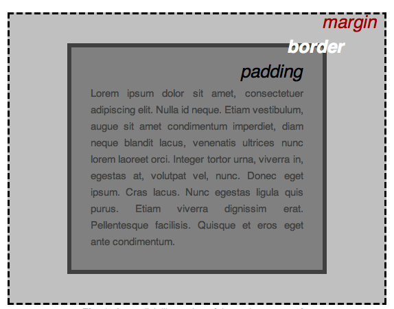
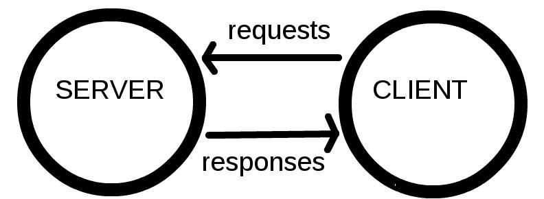

Web 入门#
1) 文件#
-
文件夹和文件命名
- 全部小写
- 没有空格
- 使用破折号 (dashes)
2) HTML 基础#
-
HTML (Hypertext Markup Language)
-
not a programming language; it is a markup language (标记语言)
-
HTML 由一系列 elements (元素) 组成
wrap the content 的不同部分

-
-
Attributes (属性)
- 空格
- attribute name =
-
"attribute value"
简单的属性值 (不包含 空格, ", ', `, =, <, >) 可以不加引号

-
Nesting elements (嵌套元素)
把元素放进其他元素里
-
empty elements (空元素)
have no content, 如 <img>
-
HTML 起手式
-
<html>
- wraps 所有内容
- 根元素
-
<head>
- don't show 的容器
-
包含:
- 关键字 和 页面描述(出现在搜索结果中)
- CSS
- character set(字符集) 声明 ...
-
<title>
- 设置页面标题
- 显示在 浏览器tab 上，也作为收藏网页的描述文字。
-
<body>
- show
-
-
标记文本的元素
-
Heading (标题)
<h1> - <h6>
-
Paragraph (段落)
<p>
-
List (列表)
- 标记列表总是至少包含2个元素。
-
最常见的类型:
- 有序列表 ordered list: <ol>
- 无序列表 unordered list: <ul>
-
list item: <li>
-
-
Links (链接)
- <a>: anchor
- href: hypertext reference
3) CSS 基础#
-
CSS (Cascading Style Sheets): 层叠样式表
- 不是 编程语言 和 标记语言
- CSS is a style sheet language
-
CSS ruleset(规则集)

- 整个结构称为 ruleset. (通常简称 rule)
-
各部分：
-
Selector (选择器)
HTML 元素名
可以选择多个元素
-
Declaration (声明)
一个规则，如 color: red;
属性: 属性值;
-
-
不同类型的选择器
- 常用选择器类型:
选择器名称 例子 元素 选择器 (类型 选择器) p ID 选择器 #my-id(FF: [id=xxx]) Class 选择器 .my-class Attribute 选择器 img[src] Pseudo-class 选择器 (指定状态) a:hover Pseudo-class selector: The specified element(s), but only when in the specified state. (For example, when a cursor hovers over a link.)
-
字体和文本
- /* 和 */ 之间的任何内容都是注释
-
CSS: 关于盒子的一切
-
CSS layout 主要基于盒模型 (box model)
CSS 布局主要就是基于盒模型的
-
每个盒子都有属性 (property):
-
padding (内边距)
content 周围的空间
-
border (边框)
padding 外面的实线
-
margin (外边距)
border 外面的空间

-
width
元素的宽度
-
background-color
元素的 content 和 padding 背后的颜色
-
color
元素的 content 的颜色 (通常是文本)
-
text-shadow
在元素的文本上设置阴影
-
display
设置元素的显示模式
-
-
浏览器给 h1 等元素设置 默认样式 (default styling)
- <body> 是块元素，意味着它占据页面空间
- 一个块元素可以有 margin 和 其他 spacing value
- <img> 是内联元素，所以为了给 <img> 应用 margin，必须 display: block 给予其块级行为。
-
4) JavaScript 基础#
-
JavaScript
-
成熟的动态编程语言，可以为网站增加交互性
动态编程语言：操作除了在 编译时(compile-time) 执行，也可以在 运行时(run-time) 执行
比如：程序运行时 改变 变量类型 或 给对象增加新的property或method
-
多用途
有了更多的经验，您将能够创建游戏，可动的2D和3D图形，全面的数据库驱动的 apps 等等！
-
本身相对袖珍，但是非常灵活
- 开发者已在核心JavaScript语言之上编写了各种工具，从而以最小的努力即可解锁大量功能。
-
包括：
-
浏览器内建 API
如：动态创建 HTML 和 设置 CSS 样式; 收集和处理 用户网络摄像头的视频流; 生成3D 图形与音频样本 ...
-
第三方 API
允许开发者在网站 集成 其他内容提供商的功能（例如 Twitter 或 Facebook）
-
第三方 框架 和 库
快速构建网站和应用。
-
-
-
JavaScript 快速入门
本文介绍核心语言的某些方面，和一些 browser API features
- JS 对大小写敏感
-
变量可以有不同的 数据类型 ：
变量 例子 String let myVariable = 'Bob'; Number let myVariable = 10; Boolean let myVariable = true; Array let myVariable = [1,'Bob','Steve',10]; Object let myVariable = document.querySelector('h1');
以及上面所有示例都是对象。JavaScript 里一切皆对象，一切皆可储存在变量里。
-
Comments
/* Everything in between is a comment. */ // This is a comment -
Operators (运算符)
数学符号，根据 值（或变量）产生结果
JS console 中尝试
-
- (还可以连接两个字符串)
- -, *, /
- =
- ===: 返回 true/false（布尔值）
- !, !==
let myVariable = 3; !(myVariable === 3); let myVariable = 3; myVariable !== 3;
-
-
Conditional (条件语句)
-
Function (函数)
用来封装可重复使用的功能
-
Events (事件)
网站上的交互需要 events handlers
event handler 监听浏览器的活动，并运行代码响应
JS console 中尝试以下代码
// onclick handler property = 匿名函数 document.querySelector('html').onclick = function() { alert('Ouch! Stop poking me!'); } // 等价于 let myHTML = document.querySelector('html'); myHTML.onclick = function() {};把 event handler 附加到元素的方法有很多
-
其他
- 在JS中，Null 是特殊值，表示引用的值不存在
5) 发布网站#
- 搜索 "web hosting" and "domain names"
-
在线编程：
6) Web 如何工作#
-
Clients and servers (客户端和服务器)

-
比喻
- web(万维网): 路
- client: 家
- server: 商店
- internet connection: 家和商店的街道
-
TCP/IP: 交通工具
定义数据应如何在Web上传输的通信协议
-
DNS: 网站(商店)的通讯录
-
HTTP: 下订单用的语言
定义 client 和 server 交流语言的 application protocol
-
Component files (组成文件): 买的商品的不同部分
分为：
-
Code files (代码): HTML, CSS, and JavaScript ...
-
Assets (资源): images, music, video, Word documents, and PDFs ...
-